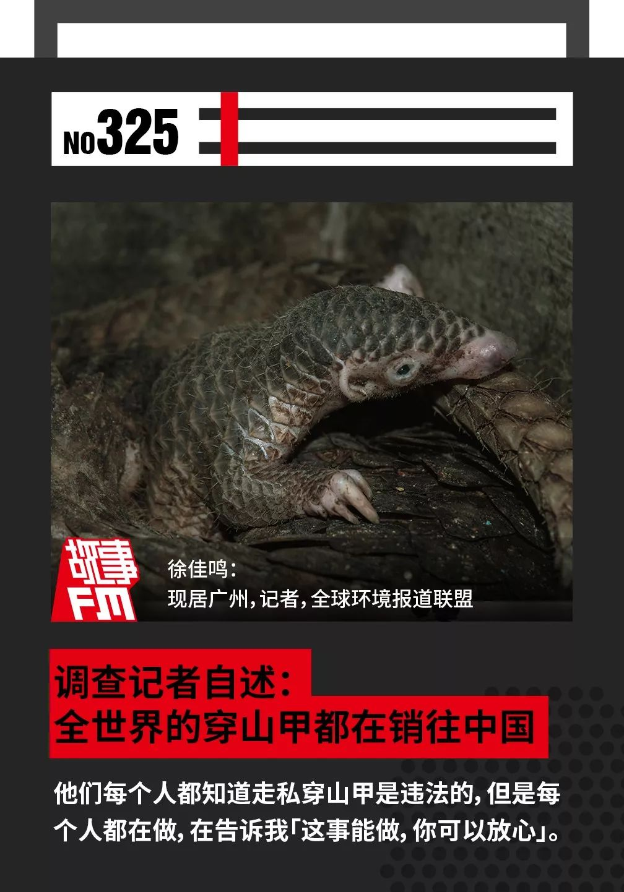
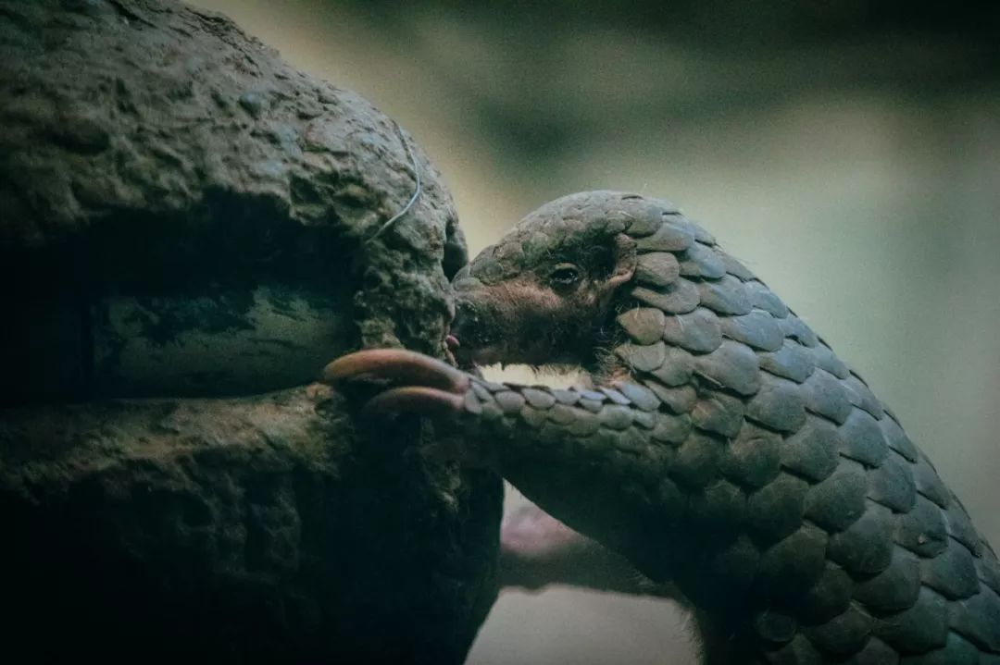
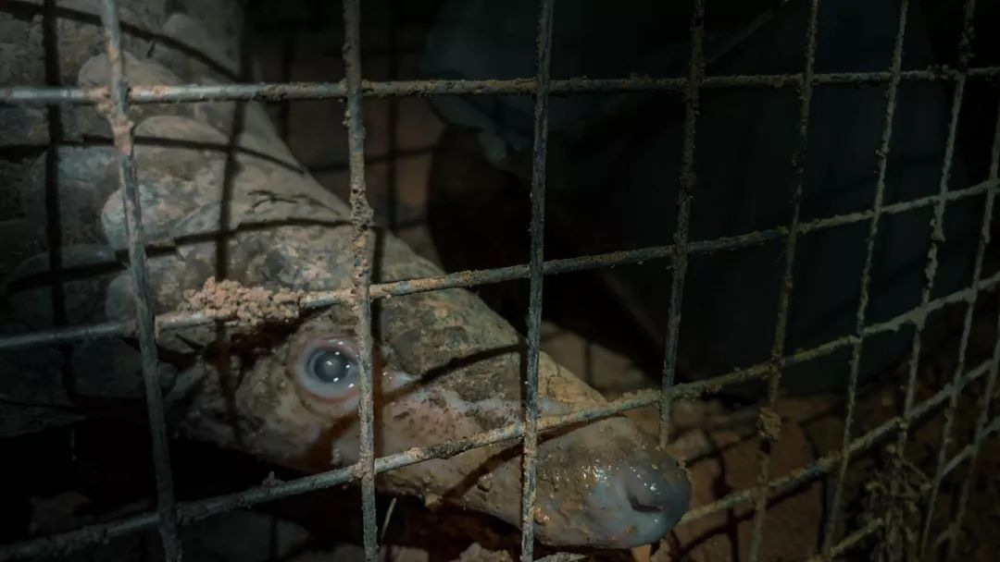
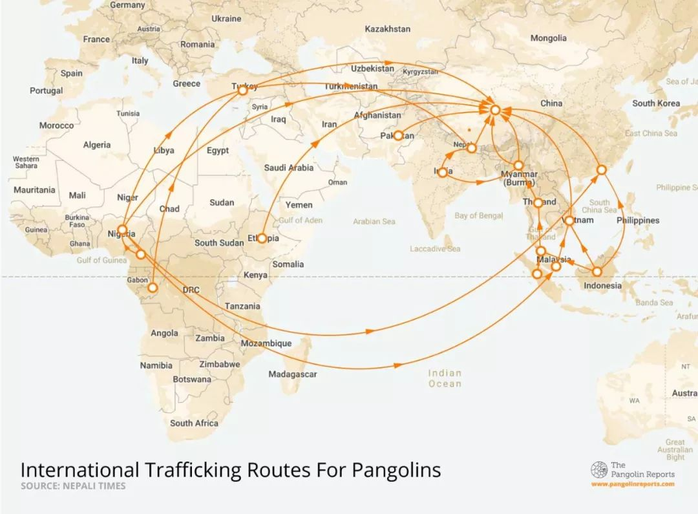
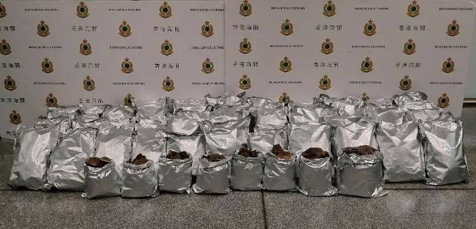
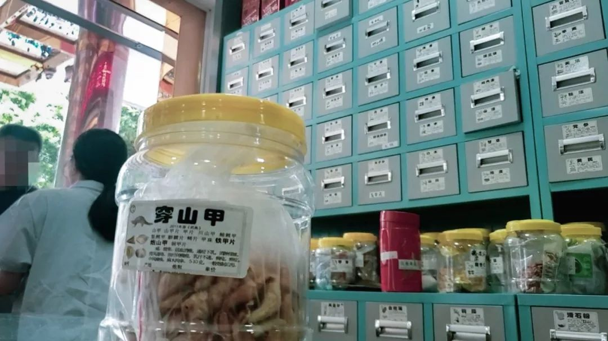
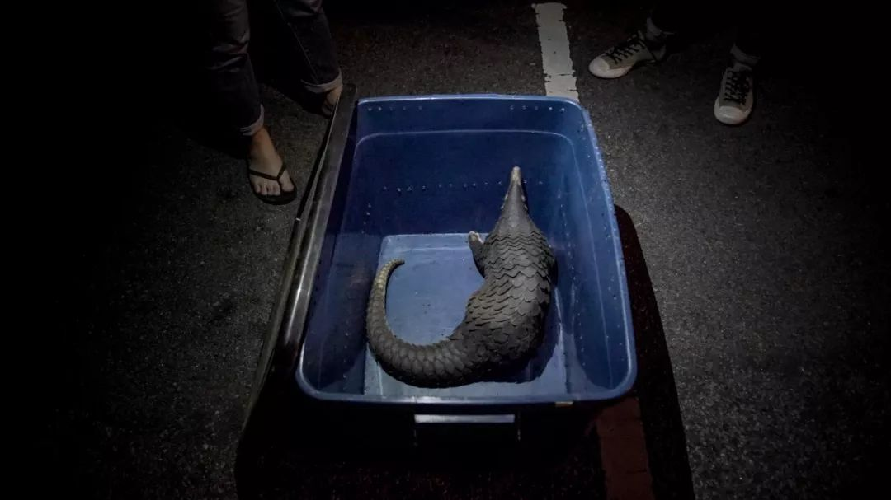
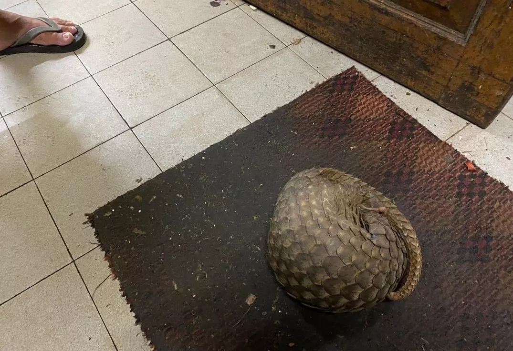

二十多日煎熬，我的隔离日记
原文链接 备份链接 “ - 疫 情 之 下 - 疫情过后，你最想见的人是谁，最想做的事是什么？我想，等疫情过后，我最想见的人就是我的妻子和女儿，我想牵着你们的手，去我工作和生活的城市看一看，去吃一碗热干面，去江汉路上走一走，去看樱花盛开， …


🎧 点击上方图片，跳转「故事FM」小程序，收听真人讲述。记得添加「我的小程序」，一键收听全部故事哟！
2 月 7 日，华南农业大学宣布，穿山甲是新型冠状病毒潜在的中间宿主。
在 2 月 15 日世界穿山甲日来临之际，我们制作了这期特别节目，来跟你说说穿山甲的真实处境。
今天故事的讲述者徐佳鸣是一个生活在广州的记者，他曾经在南都周刊等媒体工作过。2019 年，他加入全球环境报道联盟，与来自亚洲和非洲的三十多个记者一道，深入调查了穿山甲的非法贸易链。

■野生动物专家估计，十分之九的穿山甲走私并未被发现。 图片/蔡耀徵，台湾报道者
-1-
「通乳」的穿山甲
我是北方人，我在北方生活的时候从没听说有谁要吃穿山甲，或者说大家完全没有这方面的知识。我现在已经在广州生活六年了，我听说广东这边有一些吃野味的习俗，穿山甲就是其中的一个野味。
我想应该有一些人可能还是会相信吃穿山甲是有好处的，认为它可以治某些病。
大家都会用一个词——它很「补」。
中医认为，穿山甲有挖掘或者掘地的习惯，以形补形，所以穿山甲就有帮人疏通或打通的功效。比如说，穿山甲在中药里面的一个药用就是「通乳」。妈妈生了小孩之后如果没有足够的奶水，很多人相信穿山甲和猪脚之类的一起煲可以通乳。
这个中医的理论有特别大的争议。很多专家和动物保护机构都出来向公众做过科普，指出穿山甲的鳞片结构主要是蛋白质，它和人类的指甲、毛发的组织是一样的，并没有什么神效。
我在饭桌上听人提起，有人很喜欢吃穿山甲。我想这种心理也就是有面子，好炫耀，展示我吃到一个很贵、很稀罕的东西而已。
-2-
广州动物园的救护经历
在 6 月份开会之前，我在广州做了一些采访。在中国做穿山甲保护，大家都绕不开一个 NGO——中国生物多样性保护与绿色发展基金会（简称中国绿发会）。
中国绿发会是野保和动保领域很重要的一个 NGO，有很强的半官方背景，所以他们比较敢做。在野保领域，穿山甲保护也是他们很重要的一个项目。
当时我跟他们接触，知道他们在广州刚好有救护行动。广州海关罚没了一些穿山甲，他们正在尝试去救护、去野放。这也是他们第一次尝试野放，最后并没有成功。
去年 4 月底左右，我在广州、清远前后一共见了 3 次穿山甲。
因为穿山甲是被解救出来的，当我见到这几只穿山甲的时候，它们是奄奄一息的，那个状态是很可怜。我白天的时候去看，他们是不会动的，基本上就蜷缩在角落里面，看起来也很脏，身上有泥巴，又不活泼。

■穿山甲被送回广东省林业局下属救护中心前留下眼泪。 图片/张思远，中国生物多样性保护与绿色发展基金会
绿发会做穿山甲专项的工作人员 Sophia 被媒体称作「穿山甲女孩」，她一个人从北京来到广州。
Sophia 要自己给穿山甲做饭，买鸡蛋来煮，再把蛋黄打出来，还要请云南的志愿者给她寄一些蚂蚁。我们会帮她去挑那些已经冻成冰疙瘩的蚂蚁。从动物园的冰箱拿出来后，要把里面的树枝、塑料都拣出来，然后把蚂蚁挑出来，和鸡蛋那些打在一起，打成糊，就好像一碗芝麻糊一样，给穿山甲吃。
穿山甲基本上是只吃蚂蚁的，而且有很多穿山甲只吃白蚁，而白蚁就更难找了。所以养穿山甲是很难，而且很贵的。要找到满足穿山甲食量的蚂蚁很不容易，因为一只健康的穿山甲至少可以吃一亩山的白蚁这样的害虫，它在生态系统中，也有自己的价值。
跟人类一样，穿山甲一年只生一胎，也很胆小。所以穿山甲就是一个非常典型的濒危野生动物，而且它还是哺乳动物，有感情，会流眼泪。
对我来说，其实更深的一个印象是我们救护的条件很一般。广州动物园已经是华南地区比较好的动物园了，但是我们也没有专门收留穿山甲的场所，而是把它放在养蜥蜴的房间。因为蜥蜴喜欢那种陈腐、阴暗的环境，所以整一排的笼舍也比较臭。
后来得知园方也做了些改造的工作，以后可能还会打交道
我们第二天去的时候，就发现穿山甲身上有蜱虫，因为会被蜱虫咬，工作人员就需要帮它除虫。他们用药水喷到穿山甲的身上，蜱虫才会掉，喷的过程中穿山甲就会抖，发出啜泣的声音，给人感觉很可怜。
-3-
中国是穿山甲消费国
2014 年 7 月，由伦敦动物学会主持的 IUCN 红色名录物种存续委员会穿山甲专门小组，把中华穿山甲及马来穿山甲的保护级别提升至「极危」。全部 8 个物种均面临绝种威胁。而且他们发出警告，说穿山甲是目前全世界最常被走私买卖的哺乳类动物。
经过一些基本的研究，我们发现那些穿山甲的走私买卖最后都流向了中国，中国是一个绝对的穿山甲消费国。越南的买卖量仅次于中国，但很多穿山甲即使到了越南，最终也是为了转运到中国。

■横跨亚非的走私路线图，据信，穿山甲的需求主要来自中国。数据：尼泊尔时报
-4-
初见各国记者
做完基本的研究，写了一个国别报告之后，在 6 月初我和全球环境报道联盟的所有记者见了一个面，商讨下面的调查方向。
我们做新闻行业的感受，是中国记者和外国记者之间的这种跨国合作挺不容易的。外国记者对中国都会有一些误解或者偏见之类的东西。
他们好像觉得中国采访会很难，有一些数据会很难拿到，会很可怕。其实也没有那么糟糕，中国有一个很公开的法庭的数据，其实很多国家是没有的。
那次会议上，大家确定最终要出一个穿山甲走私贸易的全球报告，基本上是每个记者负责在自己的国家去调查。不过最后，所有的记者都把期待投向了我，因为大家知道穿山甲的流向最终是中国，大家希望我能解释中国消费穿山甲的实际情况到底是什么样的。

■香港海关缉获的用锡箔纸包裹的 110 公斤穿山甲鳞片，两名广西女子试图从香港走私到澳门。图片/香港海关
-5-
中国市场的「吃」和「药用」
我要解答的主要问题：中国到底是怎么用穿山甲？中国人到底是不是那么爱吃？中国的药厂是不是那么疯狂？中国实际情况是怎么样的？
所以我主要去解答「吃」和「药用」这两个方面。
就在开会之后，我和一些做野保的志愿者一起在广州附近去做食用的调查。
那些志愿者是非常有经验的中年人，很会和贩子打交道。但即使和他们配合，我们也发现即便在广州这样一个很喜欢吃野味的地方，穿山甲已经不是那么容易吃到了。因为这很明确是违法的行为，如果被举报警察是真的会来抓你的。
当然，也跟这两年反腐的大背景有关系。因为穿山甲非常贵，基本上就是当官的和有钱人在吃的，吃一次穿山甲大概要一万元左右。所以这两年吃的情况还是有的，但是比之前会少很多，市场也小很多。
然后，我们就要去回答「药用」的部分。中国到底用了多少穿山甲在药上面？
其实中国关于穿山甲最大的一个法律漏洞，就是中药。穿山甲的入药在中国是合法的。我们国家遵守国际条约，对于穿山甲不能贸易、不能把它烹饪、卖钱，这些都是不行的。但是穿山甲的药用是合法，中国有大概六、七十种药是要用到穿山甲的。
在中国，买到合法药用的穿山甲鳞片是很容易的。我们在广州、佛山、汕头、广西、南宁等几个城市，都可以找到药店，买到合法的穿山甲鳞片。它的价格大概在 7 块钱到 10 块钱一克，是一个比较贵的中药了。
其实在 2015 年之前，我们国家林业系统有这样一个说法，说中国有一个库存系统，我们所有合法用的穿山甲批文，都是来自于库存系统，一年的量大概是 25 吨左右，这个量应该是远远不够中国市场的需求的。
因为中国会经常发现十几吨的走私案例。一方面走私需求那么大，但一方面每年只批 25 吨，而且 2015 年之后数据不公开。
这也是中国绿发会一直在打的一个点，要求政府信息公开。他们公开地去写诉状或者是写申请报告，但都没有得到答复。所以这是一个非常大的漏洞。

■汕头一家药店贩卖无合法标签的穿山甲鳞片，价格是6元人民币每克，销售人员称穿山甲鳞片利于通乳。图片/全球环境报道联盟
所以中国有库存，但我们的库存量多少是不公开的，这里面就有两个问题：
1. 我们罚没和查获的东西是不是会流入合法市场？
2. 合法市场的量和它的普遍程度到底是怎么样的？
先回答了第二个问题，就是中国的药厂的情况大概怎么样。这方面，中国绿发会有一个比较好的报告，在前两年他们有一个中国合法使用的国药准字中有穿山甲成分的名单。查这个应该是不难的，甚至销量，公众都应该可以查询到。但是我用了挺多数据库，没有查到 2019 年穿山甲的数据情况，所以只能依靠 2016 年的表格。
我们对了一下，表格里面多数药还是存在的。这其中大概有两、三家药厂是在广东的，所以我们就去了这几家工厂。
很幸运，我们在其中一家工厂碰到了采购的主管之一。他非常信任我们，给我们看了他手里一个来自天津的批文，一个广东的工厂用的是天津的批文，用量是 800 公斤。他告诉我，这个量是很小的。
因为它也不是什么特别大的厂，这样的厂一个月左右就会用到 800 公斤的话，我们 25 吨的量是经不起推敲的。
我们通过采访和暗访得到的一个线索，也许可以回答中国在「药用」这一块可能是存在比较明显的值得去监督的地方。
-6-
缅甸调查
因为中国本土的中华穿山甲濒临灭绝，已经很难觅到踪影，所以现在在中国能买到的穿山甲和鳞片一般是从东南亚或者非洲走私过来的。
根据这次我们非洲记者的调查发现，来自中国的购买者已经深入到非洲的村子里去直接收购穿山甲了。
在这次的调查过程中，除了国内，我还在当地记者的配合下，暗访了越南和缅甸的交易链条。其中缅甸的见闻最让我印象深刻。

■在记者的秘密调查中，从网络野生动物贩子那里救出了穿山甲。穿山甲后来由马来西亚野生动物部和国家公园半岛释放到丛林中。图片/全球环境报道联盟
缅甸的行程是去年 11 月 14 日到 12 月 12 日。
缅甸人对中国人的印象不太好，因为他们觉得中国是一个拿走缅甸资源的国家。中国是向他们索取很多的一个国家，虽然中国也付钱，但这些钱不一定会受益到每个普通人。因为缅甸是军政府，很多地方还是不透明、不公开，所以普通人或者我接触到的一些人，他们会对中国人会有这样的想法。
在缅甸，我一开始采访就是通过打入华人圈子的形式来做。
我就见到这样一个中国律师。他很谨慎，也谈了很多。他透露了一个信息，其实在缅甸吃穿山甲是非常容易的，有一个饭店，他们圈子的中国人都知道。
我知道了这个线索之后，就去了那个饭店。去到之后，就进入了一个做灰色生意的中国人的世界。饭店的感觉就和一个北京的饭店一模一样，每个人都喝得醉醺醺的，全是白酒味道。各种南方、北方的方言，大家在吹牛、在扯淡、在谈女人、在说自己赚了多少钱、在诉苦…… 他们都非常放得开，声音很大，就和中国任何一个饭店一样。

■徐佳鸣在仰光的饭店中，看到了穿山甲
然后我们点了一些正常的菜，跟老板聊了一下，说我们想吃穿山甲，想招待人。老板当场就答应说，不用预定，他们做这个已经做了十多年，非常自信。
这跟我们在中国和越南看到的情况不一样。在中国，老板非常谨慎，你需要三、四次去吃饭，他才有可能给你一点点信息，才可能去相信你。在越南也是，你要提前一星期去预定。
吃完饭结账之后，我跟老板说，我想看一下才放心。他很随便地叫了一个厨师带我去后厨，拎了一只穿山甲出来。我已经半年没有见到活的穿山甲，这次见到的穿山甲看起来非常可怜，蜷缩在地上，我拍了几张照片。
这个饭店的对面是一个特产店，它里面也在卖穿山甲的鳞片和穿山甲粉。价格也不低，大概一公斤可能要 3000 元人民币以上。老板还不建议我们买甲片，说「你带不过去，很危险」。然后我就顺水推舟问他，「你能不能帮我送」，但这个老板他却说带不了。
这样看来，在仰光吃穿山甲非常容易，买到也很容易，运送可能有点难。

■2019年6月，菲律宾当局在大雅台市（ Tagaytay City）查获了10隻穿山甲，3名男子被捕。图片/Department of Environment and Natural Resources, Philippines
-7-
探访大其力
后来我还去了缅甸东部边境城市大其力。大其力臭名昭著，是金三角的中心。毒枭坤沙 90 年代就生活在这个城市，相当于是他的大本营。现在那边也有很多中国人，因为附近有金矿。
我来到这里之后，又见到了穿山甲。
因为当地有华人，有中国人吃就会有人卖。我很轻松地就打听到，早市大概 8 点或 9 点之前，去到市场就可以见到卖家。然后我就去了，见到一个缅甸大姐在路边卖穿山甲。因为她身上绑了一只猴子，非常的显眼，旁边摊位上放的可能是老虎或者豹子下颚的牙，鸟笼里面有一些猛禽，还有一些昆虫也都在卖。
我用缅甸语「穿山甲」询问，缅甸大姐听懂了。她打了一个电话，她老公就把一只穿山甲拿了过来。
这只穿山甲让我印象非常深刻，它是我见过身体最好、最活泼、最健壮的一只穿山甲。他们把它丢到框子里后，穿山甲立刻翻越框子，要逃跑，速度非常快，吓得缅甸大姐养的那只猴子都在叫。原来健康的穿山甲，它的爬行速度是这么快的！
但是穿山甲确实很容易被人类降服，缅甸大姐很有经验，抓起那只穿山甲的尾巴，拍拍它，它就怕得缩起来了。
■商贩拍拍穿山甲，把它举起来，然后又塞回尼龙袋里
我是以买家身份去问的，这只穿山甲的价格大概在三、四千人民币左右。
采访结束之后，我难受了好一阵。因为我见到了各种形态的穿山甲，健康的、脆弱的、死掉的，它们要被中国人吃，我又是以中国人的身份去买，开的饭店也是服务中国人，感觉很复杂。看到穿山甲和我们中国人的联系，我自己作为一个中国人，心情还是有点不太舒服。
-8-
非法贸易现状
关于运送到中国的方式，我们在当地问了两个做物流的人，他们大概提供了两种方法。
第一种是最简单的，中国在边境地区都有一个「边民互贸」的政策，当地人持相关证件，每天是可以带一些东西跨境交易的。通过「蚂蚁搬家」的形式，请当地人帮你一点一点地帮你带，可能量会比较小，但是风险最低。
还有一种方法，就是通过当地的物流公司运输。因为集装箱车或者货车都是很大的，他可以把穿山甲的鳞片混在成吨的物品里面，这样混过去。同样相当于是「蚂蚁搬家」，把大的货化整为零带到中国。
他们每个人都知道走私穿山甲是违法的，但是每个人都在做，而且每个人都很轻松的告诉我「这事能做，你可以放心」。
■站在越南芒街，仅一河之隔可以看到它的姊妹城市中国广西东兴，记者在这里暗访发现包括穿山甲在内的地下走私仍然活跃。图片/全球环境报道联盟
我们的编辑问过一个问题：既然缅甸的本地人没有消费穿山甲的习惯，主要都是卖给了中国人，而且在缅甸买卖穿山甲也是非法的，那为什么缅甸没有控制住穿山甲的交易呢？
我们的缅甸记者举了一个例子，她有一个专门做反大象盗猎的摄影师朋友告诉她，在那些边境山区，缅甸警察的枪比盗猎者的枪还差，警察见到盗猎者是要跑的，因为盗猎者的枪更好，人更多。
我去过两次缅甸，我同样感觉到，缅甸因为种族问题、经济发展问题等原因，可能也的确没有这样的力量去遏止穿山甲的非法贸易。
——————
中国其实是有两个趋势。一个是提供保护的法律环境在变好，因为国家正在倡议把穿山甲升为一级保护动物，变成一级保护动物之后，就由国务院来审批它的药用。
甚至我看到一个最新的报道，濒危野生动植物种国际贸易公约（CITES） 的总干事来中国，国家林业局的官员告诉她，他们会倡议穿山甲去商业化，禁止商业用途，除非极个别的情况，尽量不药用。
另外一个就是，中国媒体或 NGO 可以去做更多的事，对有权力处理的部门（主要是林业部门和海关）进行监督和关注。
我希望中国人尽量不要吃野味，因为这个行为又不文明又危险。希望年轻一代 90 后、80 后没有这个习惯，因为这也一点也不酷。
如果你想阅读徐佳鸣他们撰写的这份穿山甲报告，欢迎到 故事FM 的微信公众号后台，回复「穿山甲」这三个字来获得链接。
-封面图来源 全球环境报道联盟
未注明来源图片由 讲述者 提供


Staff
讲述者 | 徐佳鸣
主播 | @寇爱哲
制作人 | @寇爱哲
声音设计 | @故事FM 彭寒
文字 | 翌辰
运营 | 翌辰
BGM List
01. StoryFM Main Theme - 彭寒（片头曲）
02. Ghost Town - 彭寒（食材与药材）
03. 华芳 - 彭寒（极危）
04. Static Medium - Fat Jon（仰光）
05. Your Purpose - Fat Jon（大其力）
06. Night Train - 彭寒（片尾曲）
故事FM
用你的声音，讲述你的故事
苹果播客 | 网易云音乐 | 蜻蜓 FM | 喜马拉雅
QQ 音乐 | 荔枝FM | 懒人听书 | 酷狗音乐
均可收听

▼ 点击「阅读原文」，讲出你的故事
故事FM
支持故事FM
微信扫一扫赞赏作者 赞赏
长按二维码向我转账
支持故事FM
受苹果公司新规定影响，微信 iOS 版的赞赏功能被关闭，可通过二维码转账支持公众号。
原文链接 备份链接 “ - 疫 情 之 下 - 疫情过后，你最想见的人是谁，最想做的事是什么？我想，等疫情过后，我最想见的人就是我的妻子和女儿，我想牵着你们的手，去我工作和生活的城市看一看，去吃一碗热干面，去江汉路上走一走，去看樱花盛开， …
原文链接 备份链接 _ _ _ _ 这几天，有媒体称“风月同天”不如“武汉加油”，后被群嘲。因为它背后的逻辑，并不是在讨论“灾难当头可否允许诗意停留”，而是把诗意直接当作非日常的存在，好像感风吟月都是特殊的情绪仪式，平日里不好随意散发的， …
原文链接 备份链接 ****** 当许知远在 2020 年 1 月前往吉隆坡旅行时，原本是想跟随孙中山与康有为的足迹，继续他对中国近代变革的探寻，但国内的疫情随即占据了他的注意力，也影响了这次旅程。与今天摆在我们面前的现实困境相似，一百 …
原文链接 备份链接 在苏格兰格拉斯哥大学读书的几个中国留学生去超市购物的路上，一个当地老奶奶询问他们：“是中国来的学生吗？”当他们回答“是”之后，老奶奶说：“let me give you a hug（让我给你一个拥抱）”。 全文2275 …
原文链接 备份链接 从武汉封城之日起，三十多岁的外卖员老计一直在工作。他穿梭在江城的大街小巷，一边送餐，一边用手机记录下自己看到的一切。 空荡荡的汉街，戏台上有一只狗。沃尔玛的猪肉档人山人海，“我不敢去，也抢不过”。超市的叶子菜卖得快，去 …